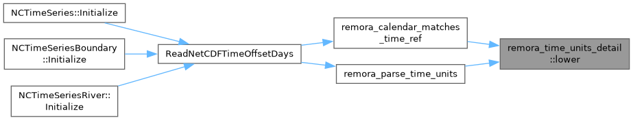
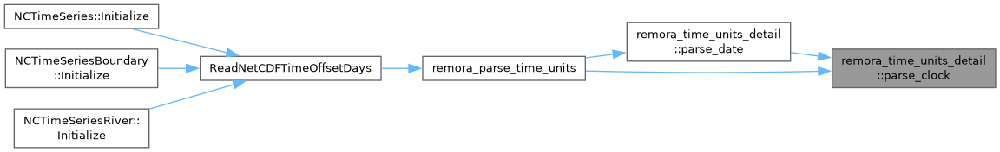
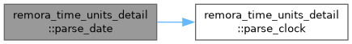
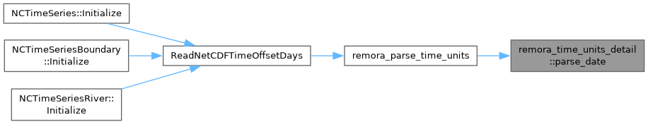

- Generated by
 1.15.0
1.15.0
|
REMORA
Regional Modeling of Oceans Refined Adaptively
|
Functions | |
| std::string | lower (std::string s) |
| bool | parse_clock (const std::string &tok, REMORATimeUnits &out) |
| hh:mm[:ss[.s]], optionally suffixed z. Fills the time fields on success. | |
| bool | parse_date (const std::string &tok, REMORATimeUnits &out) |
| bool | is_utc (const std::string &tok) |
| A time-zone designator that means UTC. | |
|
inline |
A time-zone designator that means UTC.
Definition at line 113 of file REMORA_TimeUnits.H.
Referenced by remora_parse_time_units().
|
inline |
Definition at line 54 of file REMORA_TimeUnits.H.
Referenced by remora_calendar_matches_time_ref(), and remora_parse_time_units().

|
inline |
hh:mm[:ss[.s]], optionally suffixed z. Fills the time fields on success.
Definition at line 65 of file REMORA_TimeUnits.H.
Referenced by parse_date(), and remora_parse_time_units().

|
inline |
[-]YYYY-MM-DD, optionally followed by T and a clock. Fills the date fields on success; a clock attached with T is parsed too.
Definition at line 90 of file REMORA_TimeUnits.H.
Referenced by remora_parse_time_units().

